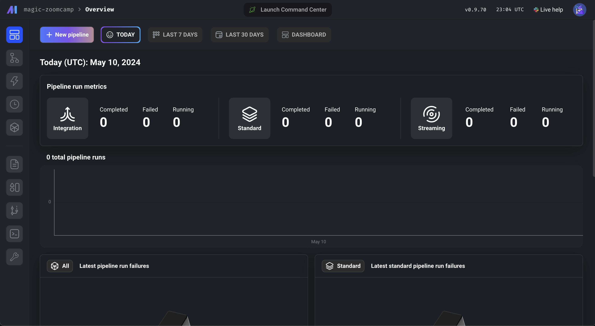
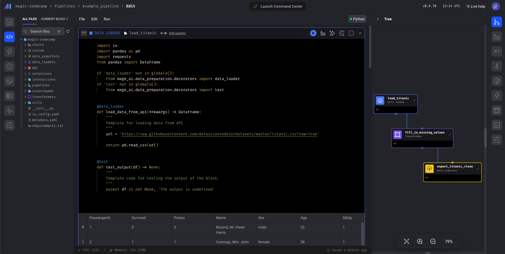
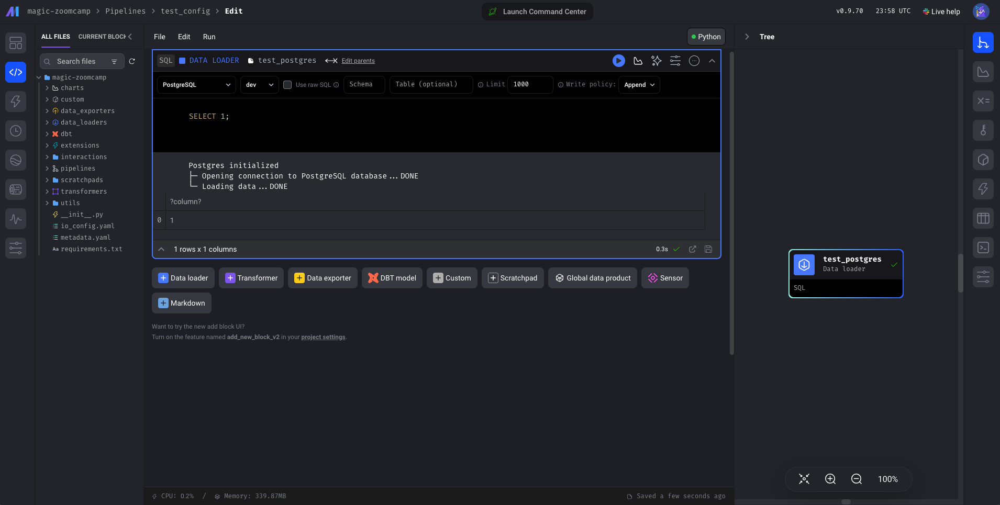

Orchestration
Module 1: 📯 Intro to Orchestration
What is Orchestration?
A large part of data engineering is extracting, transforming and loading data between sources. Orchestration is a process of dependency management, facilitated trough automation. The data orchestrator manages scheduling, triggering, monitoring, adnd even resource allocation for you data engineering workflows. Every workflow requires sequential steps:
- Steps == tasks
- Workflows == DAG’s (directed acyclic graphs) or Pipeline
- Data orchestrator:
Module 2: 🧙♂️ Intro to Mage
What is Mage?
Open-source data pipeline tool for transforming and integrating data. The modern replacement for Airflow.
It consist of:
- Projects: forms the basis for all the work you can do in Mage - you can think of it like a Github repo. It contains the code for all of your pipelines, blocks and other assets.
- Pipelines: is a workflow that executes some data operation - maybe extracting, transforming and loading data from an API.
- Blocks: is a file that can be executed independently or within a pipeline.
Configure Mage
First, let’s clone this repo:
git clone https://github.com/mage-ai/mage-zoomcampyou go to the repo with cd and then rename dev.env to .env — this will ensure the file is not committed to Git by accident, since it will contain credentials in the future.
Now we can build the container:
docker compose buildwich has mageai and postgres. Now we can run the container by doing:
docker compose upand then in our browser we go to localhost:6789 we will get something like this:

wich is the mage instance.
A simple Pipeline
Go to the Pipelines tab, wich gives you an overview of all of the pipelines that we have. The docker compose will have created a Project in mage called magic-zoomcamp, wich will have an example_pipeline. Here’s how that pipeline looks:

you can play with it, but we are gonna use this to make a more interesting pipeline wich will send the data to postgres.
Module 3: 🐘 ETL: API to Postgres
Configuring Postgres
In order to write things into postgres we need to first connect to postgres, for this we are gonna do it the simple way, with the mage GUI. Go to the Files tab and then open the io_config.yaml file, which is were we manage our conections. Here we have a default profile, but let’s create a new one called dev.
dev:
# PostgresSQL
POSTGRES_CONNECT_TIMEOUT: 10
POSTGRES_DBNAME: "{{ env_var('POSTGRES_DBNAME') }}"
POSTGRES_SCHEMA: "{{ env_var('POSTGRES_SCHEMA') }}"
POSTGRES_USER: "{{ env_var('POSTGRES_USER') }}"
POSTGRES_PASSWORD: "{{ env_var('POSTGRES_PASSWORD') }}"
POSTGRES_HOST: "{{ env_var('POSTGRES_HOST') }}"
POSTGRES_PORT: "{{ env_var('POSTGRES_PORT') }}"Note that we are pulling the environment variables trough jinja templating, wich is the way we pull variables in mage.
We can now test this by making a new pipeline called test_config and make a SQLData Loader block inside this called test_postgres, where we can define a PostgreSQL connection and the dev profile. We can run SQL code here wich will be run in Postgres, and we will be sure that connection is made:
SELECT 1;
ETL: API to Postgres
So, its not going to be an actual API, just a compress csv, but the idea is pretty similar. First, lets create a new Standard (batch) pipeline called api_to_postgres and we are gonna edit the pipeline and create a Data loader for Python, and use an API template, and lets called it load_api_data.
Always map data types, in order to manage memory consumption.
We use this python script:
import io
import pandas as pd
import requests
if 'data_loader' not in globals():
from mage_ai.data_preparation.decorators import data_loader
if 'test' not in globals():
from mage_ai.data_preparation.decorators import test
@data_loader
def load_data_from_api(*args, **kwargs):
"""
Template for loading data from API
"""
url = 'https://github.com/DataTalksClub/nyc-tlc-data/releases/download/yellow/yellow_tripdata_2021-01.csv.gz'
taxi_dtypes = {
'VendorID': pd.Int64Dtype(),
'passenger_count': pd.Int64Dtype(),
'trip_distance': float,
'RatecodeID': pd.Int64Dtype(),
'store_and_fwd_flag': str,
'PULocationID': pd.Int64Dtype(),
'DOLocationID': pd.Int64Dtype(),
'payment_type': pd.Int64Dtype(),
'fare_amount': float,
'extra': float,
'mta_tax': float,
'tip_amount': float,
'tolls_amount': float,
'improvement_surcharge': float,
'total_amount': float,
'congestion_surcharge': float
}
parse_dates = ['tpep_pickup_datetime', 'tpep_dropoff_datetime']
return pd.read_csv(url, sep=",", compression="gzip", dtype=taxi_dtypes, parse_dates=parse_dates)
@test
def test_output(output, *args) -> None:
"""
Template code for testing the output of the block.
"""
assert output is not None, 'The output is undefined'Then we are gona transform the data, for this we create a generic Transformer block called transform_taxi_data.
if 'transformer' not in globals():
from mage_ai.data_preparation.decorators import transformer
if 'test' not in globals():
from mage_ai.data_preparation.decorators import test
import pandas as pd
@transformer
def transform(data, *args, **kwargs):
# Specify your transformation logic here
zero_passengers_df = data[data['passenger_count'].isin([0])]
zero_passengers_count = zero_passengers_df['passenger_count'].count()
non_zero_passengers_df = data[data['passenger_count'] > 0]
print(f'Preprocessing: records with zero passengers: {zero_passengers_count}')
return non_zero_passengers_df
@test
def test_output(output, *args) -> None:
"""
Template code for testing the output of the block.
"""
assert output['passenger_count'].isin([0]).sum() == 0, 'There are rides with zero passengers'Now, we are gonna export the data to postgres using the Data exporter block.
from mage_ai.settings.repo import get_repo_path
from mage_ai.io.config import ConfigFileLoader
from mage_ai.io.postgres import Postgres
from pandas import DataFrame
from os import path
if 'data_exporter' not in globals():
from mage_ai.data_preparation.decorators import data_exporter
@data_exporter
def export_data_to_postgres(df: DataFrame, **kwargs) -> None:
"""
Template for exporting data to a PostgreSQL database.
Specify your configuration settings in 'io_config.yaml'.
Docs: https://docs.mage.ai/design/data-loading#postgresql
"""
schema_name = 'ny_taxi' # Specify the name of the schema to export data to
table_name = 'yellow_cab_data' # Specify the name of the table to export data to
config_path = path.join(get_repo_path(), 'io_config.yaml')
config_profile = 'dev'
with Postgres.with_config(ConfigFileLoader(config_path, config_profile)) as loader:
loader.export(
df,
schema_name,
table_name,
index=False, # Specifies whether to include index in exported table
if_exists='replace', # Specify resolution policy if table name already exists
)And now we can test our load by doing a SQL Data loader block and do:
SELECT *
FROM
ny_taxi.yellow_cab_data
LIMIT
10and we should see our data.